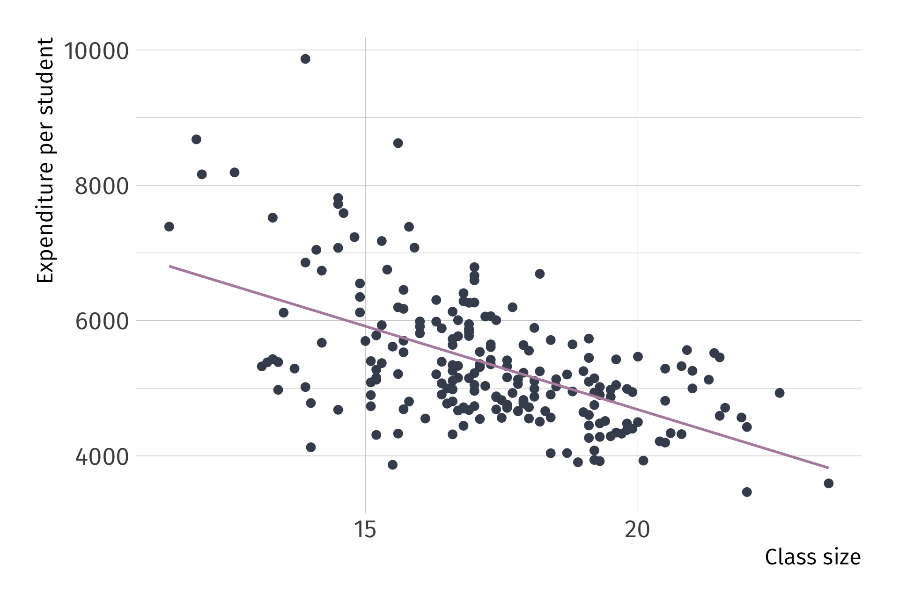
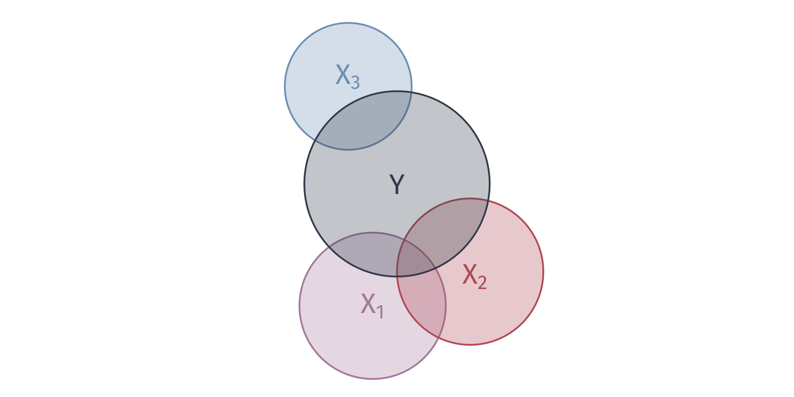
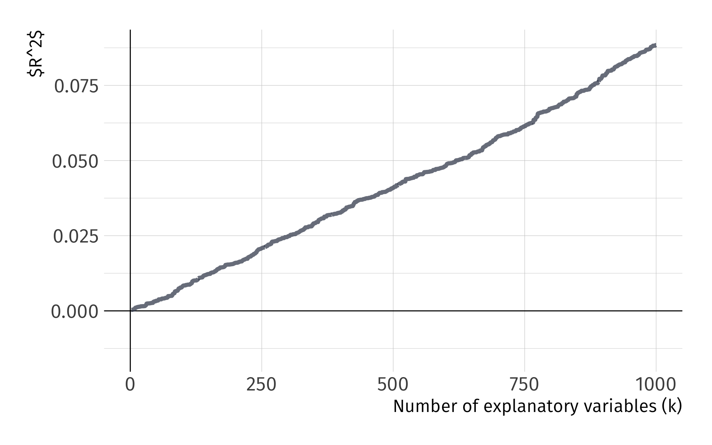

Multiple linear regression
EC 320, Set 07
Spring 2023
Housekeeping
PS04:
- Will be assigned later today
- Due next Tuesday night
Reading: (up to this point)
ItE: R, 1, 2, 3 MM: 1, 2
Prologue
First, a quick recap of what we’ve done thus far.
The regression model
We can estimate the effect of \(X\) on \(Y\) by estimating a regression model:
\[Y_i = \beta_0 + \beta_1 X_i + u_i\]
\(Y_i\) is the outcome variable.
\(X_i\) is the treatment variable (continuous).
\(\beta_0\) is the intercept parameter. \(\mathop{\mathbb{E}}\left[ {Y_i | X_i=0} \right] = \beta_0\)
\(\beta_1\) is the slope parameter, which under the correct causal setting represents marginal change in \(X_i\)’s effect on \(Y_i\). \(\frac{\partial Y_i}{\partial X_i} = \beta_1\)
\(u_i\) is an error term including all other (omitted) factors affecting \(Y_i\).
The error term
\(u_i\) is quite special
Consider the data generating process of variable \(Y_i\),
- \(u_i\) captures all unobserved relationships that explain variation in \(Y_i\).
Some error will exist in all models, our aim is to minimize error under a set of constraints. This error is the price we are willing to accept for simplified model
The error term
Five items contribute to the existence of the disturbance term:
1. Omission of explanatory variables
2. Aggregation of Variables
3. Model misspecificiation
4. Functional misspecificiation
5. Measurement error
Running regressions
Using an estimator with data on \(X_i\) and \(Y_i\), we can estimate a fitted regression line:
\[ \hat{Y_i} = \hat{\beta}_0 + \hat{\beta}_1 X_i \]
- \(\hat{Y_i}\) is the fitted value of \(Y_i\).
- \(\hat{\beta}_0\) is the estimated intercept.
- \(\hat{\beta}_1\) is the estimated slope.
This procedure produces misses, known as residuals, \(Y_i - \hat{Y_i}\)
Gauss-Markov Theorem
OLS is the Best Linear Unbiased Estimator (BLUE) when the following assumptions hold:
A1. Linearity: The population relationship is linear in parameters with an additive error term.
A2. Sample Variation: There is variation in \(X\).
A3. Exogeniety: The \(X\) variable is exogenous
A4. Homoskedasticity: The error term has the same variance for each value of the independent variable
A5. Non-autocorrelation: The values of error terms have independent distributions
Consider the following example.
Ex. Effect of class sizes on test scores
- Empirical question:
-
What improvement do smaller class sizes have on student test scores, if any?
Ex. Effect of class sizes on test scores
Estimate effect of class size on test scores with the following:
\[ \text{Scores}_i = \beta_0 + \beta_1 \text{Class Size}_i + u_i \]
Data: Test performance and class across school districts in MA
- Scores: 4th grade test scores agg. across reading, math, and science
- Class size: Ratio of number of students to teachers
Always plot your data first

Raw data
Fitting OLS
Ex. Effect of class sizes on test scores
Estimate effect of class size on test scores with the following:
\[ \text{Scores}_i = \beta_0 + \beta_1 \text{Class Size}_i + u_i \]
Q. How might smaller class sizes influence test scores?
A. More personalized teaching, less classroom disruptions etc.
Q. What sign would we expect on \(\beta_1\)?
A.
\[ \beta_1 < 0 \]
Smaller class sizes (X) increases test scores (Y)
Ex. Effect of class sizes on test scores
Estimate effect of class size on test scores with the following:
\[ \text{Scores}_i = \beta_0 + \beta_1 \text{Class Size}_i + u_i \]
Q. Do we think \(\beta_1\) will be a good guess of the underlying population parameter?
A. In \(u_i\), several variables are correlated with class size and test scores
Such as… school funding, which might affect:
- Textbooks
- Computers
- Teacher salary
- Attract high income parents
Smaller class sizes (X) increases test scores (Y)

Smaller class sizes (X) increases test scores (Y) along with greater school funding (U)
Smaller class sizes (X) increases test scores (Y) along with greater school funding (U). And, school funding (U) is correlated with test scores (X).

Any unobserved variable that connects a backdoor path between class size (X) and test scores (Y) will bias our point estimate of \(\beta_1\).
Any unobserved variable that connects a backdoor path between class size (X) and test scores (Y) will bias our point estimate of \(\beta_1\). Why?
Any unobserved variable that connects a backdoor path between class size (X) and test scores (Y) will bias our point estimate of \(\beta_1\). Why?
A1. Linearity
A2. Sample Variation
A3. Exogeniety
A4. Homoskedasticity
A5. Non-autocorrelation
A6. Normality
Any unobserved variable that connects a backdoor path between class size (X) and test scores (Y) will bias our point estimate of \(\beta_1\). Why?
A1. Linearity
A2. Sample Variation
A3. Exogeniety: The \(X\) variable is exogenous
A4. Homoskedasticity
A5. Non-autocorrelation
A6. Normality
Any unobserved variable that connects a backdoor path between class size (X) and test scores (Y) will bias our point estimate of \(\beta_1\). Why?
A. Because is violates the exogeniety assumption
\[ \mathop{\mathbb{E}}\left( u|\text{Class Size} \right) \neq 0 \]
Correlation between class size and school funding (\(u_i\)) is not zero.
Graphically…
Valid exogeniety, i.e., \(\mathop{\mathbb{E}}\left( u \mid X \right) = 0\)
Note: This is simulated data
Invalid exogeniety, i.e., \(\mathop{\mathbb{E}}\left( u \mid X \right) \neq 0\)
Note: This is simulated data
What the actual data look like:
What the actual data look like, as a scatter plot:

This violation has a name. We call it omitted variable bias
Omitted variable bias
Bias that occurs in statistical models when a relevant variable is not included in the model.
Consequence: Leads to the incorrect estimation of the relationships between variables, which may affect the reliability of the model’s predictions and inferences.
Solution: “Control” for the omitted variable(s).
Multiple linear regression
Simple linear regression features one outcome variable and one explanatory variable:
\[ \color{#434C5E}{Y_i} = \beta_0 + \beta_1 \color{"#81A1C1"}{X_i} + u_i \]
Multiple linear regression features one outcome variable and multiple explanatory variables:
\[ \color{#434C5E}{Y_i} = \beta_0 + \beta_1 \color{"#81A1C1"}{X_{1i}} + \beta_2 \color{"#81A1C1"}{X_{2i}} + \cdots + \beta_{k} \color{"#81A1C1"}{X_{ki}} + u_i \]
This serves more than one purpose. Multiple explanatory variables improves predictions, avoids OVB, and better explains variation in \(Y\).
Class funding (U) confounds our estimates of smaller class sizes (X) on test scores (Y).
Any unobserved variable that connects a backdoor path between class size (X) and test scores (Y) will bias our point estimate of \(\beta_1\).
Class funding (U) confounds our estimates of smaller class sizes (X) on test scores (Y). Including data on school funding (U) in a multiple linear regression allows us to close this back door path.
With all backdoor paths closed, point estimates of \(\beta_1\) will no longer be biased and will return the population parameter of interest.
How does it work? We can think of it almost like demeaning.


OLS Estimation
As was the case with simple linear regressions, OLS minimizes the sum of squared residuals (RSS).
However, residuals are now defined as
\[ \hat{u}_i = Y_i - \hat{\beta}_0 - \hat{\beta}_1 X_{1i} - \hat{\beta}_2 X_{2i} - \cdots - \hat{\beta}_{k} X_{ki} \]
To obtain estimates, take partial derivatives of RSS with respect to each \(\hat{\beta}\), set each derivative equal to zero, and solve the system of \(k+1\) equations.
- Without matrices, the algebra is difficult. For the remainder of this course, we will let R do the work for us.
Coefficient Interpretation
Model
\[ \color{}{Y_i} = \beta_0 + \beta_1 \color{}{X_{1i}} + \beta_2 \color{}{X_{2i}} + \cdots + \beta_{k} \color{}{X_{ki}} + u_i \]
Interpretation
- The intercept \(\hat{\beta}_0\) is the average value of \(Y_i\) when all of the explanatory variables are equal to zero.
- Slope parameters \(\hat{\beta}_1, \dots, \hat{\beta}_{k}\) give us the change in \(Y_i\) from a one-unit change in \(X_j\), holding the other \(X\) variables constant.
Algebraic properties of OLS
The OLS first-order conditions yield the same properties as before.
Residuals sum to zero: \(\sum_{i=1}^n \hat{u_i} = 0\).
The sample covariance between the independent variables and the residuals is zero.
The point \((\bar{X_1}, \bar{X_2}, \dots, \bar{X_k}, \bar{Y})\) is always on the fitted regression “line.”
Goodness of fit
Fitted values are defined similarly:
\[ \hat{Y_i} = \hat{\beta}_0 + \hat{\beta}_1 X_{1i} + \hat{\beta}_2 X_{2i} + \cdots + \hat{\beta}_{k} X_{ki} \]
The formula for \(R^2\) is the same as before:
\[ R^2 =\frac{\sum(\hat{Y_i}-\bar{Y})^2}{\sum(Y_i-\bar{Y})^2} \]
Goodness of fit
Model 1 \(Y_i = \beta_0 + \beta_1 X_{1i} + u_i\).
Model 2: \(Y_i = \beta_0 + \beta_1 X_{1i} + \beta_2 X_{2i} + v_i\)
T/F?
Model 2 will yield a lower \(R^2\) than Model 1.
- Hint: Think of \(R^2\) as \(R^2 = 1 - \frac{\text{RSS}}{\text{TSS}}\).
Goodness of fit
We can describe the variation explain in \(Y\) with venn diagrams

Goodness of fit
We can describe the variation explain in \(Y\) with venn diagrams

Goodness of fit
We can describe the variation explain in \(Y\) with venn diagrams
Goodness of fit
Problem: As we add variables to our model, \(R^2\) mechanically increases.
To see this problem, we can simulate a dataset of 10,000 observations on \(y\) and 1,000 random \(x_k\) variables. No relations between \(y\) and the \(x_k\)!
Pseudo-code outline of the simulation: . . .
[
- Generate 10,000 observations on \(y\)
- Generate 10,000 observations on variables \(x_1\) through \(x_{1000}\)
- Regressions
- LM1: Regress \(y\) on \(x_1\); record R2
- LM2: Regress \(y\) on \(x_1\) and \(x_2\); record R2
- …
- LM1000: Regress \(y\) on \(x_1\), \(x_2\), …, \(x_{1000}\); record R2 ]{.mono .small}
Goodness of fit
Problem: As we add variables to our model, \(R^2\) mechanically increases.
R code for the simulation:
Goodness of fit
Problem: As we add variables to our model, \(\color{#314f4f}{R^2}\) mechanically increases.
Goodness of fit
One solution: Adjusted \(\color{#B48EAD}{R^2}\)
Goodness of fit
Problem: As we add variables to our model, \(R^2\) mechanically increases.
One solution: Penalize for the number of variables, e.g., adjusted \(R^2\):
\[ \bar{R}^2 = 1 - \dfrac{\sum_i \left( Y_i - \hat{Y}_i \right)^2/(n-k-1)}{\sum_i \left( Y_i - \bar{Y} \right)^2/(n-1)} \]
Note: Adjusted \(R^2\) need not be between 0 and 1.
EC320, Set 06 | Inference